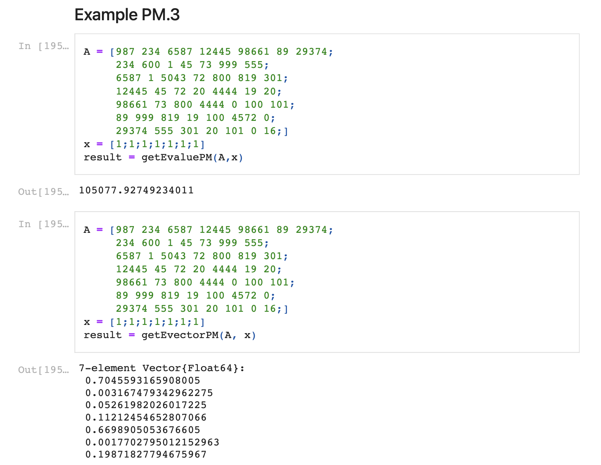

Exploring Eigenvalue Algorithms: Power Method, QR Method, and Deflation

Introduction
Eigenvalues and eigenvectors are foundational concepts in linear algebra, powering applications from quantum mechanics to machine learning. However, computing them directly via characteristic polynomials becomes computationally infeasible for matrices larger than 4x4. This paper explores iterative methods—the Power Method, QR Method, and Deflation—to efficiently compute eigenvalues, eigenvectors, and singular values for matrices of arbitrary size.
The goal of this project was twofold:
- Theoretical Rigor: Prove why these methods converge to the correct eigenvalues.
- Practical Implementation: Develop robust software (in Julia) to validate the algorithms across diverse matrix types.
The Power Method: Dominance and Iteration
The Power Method is an iterative algorithm designed to compute the dominant eigenvalue (the eigenvalue with the largest magnitude) and its corresponding eigenvector. At its core, the method leverages repeated matrix-vector multiplication to amplify the component of the dominant eigenvector in an initial guess.
Key Proof and Insight
Lemma 1 formalizes why the Power Method converges:
If \( A \) is symmetric with distinct eigenvalues \( |\lambda_1| > |\lambda_2| > \dots > |\lambda_n| \), then \[ \lim_{p \to \infty} \sum_{i=2}^n c_i \left(\frac{\lambda_i}{\lambda_1}\right)^p e_i = 0, \] leaving \( \lambda_1^p c_1 e_1 \) as the dominant term.
This lemma underpins the method’s ability to isolate \( \lambda_1 \). The dominant eigenvalue is then computed via the Rayleigh quotient:
The QR Method: Capturing All Eigenvalues
While the Power Method excels at finding the dominant eigenvalue, the QR Method computes all eigenvalues by iteratively transforming a matrix into upper-triangular form. The process hinges on QR decomposition—factoring a matrix \( A \) into an orthogonal matrix \( Q \) and upper-triangular matrix \( R \).
Why It Works
Each iteration \( A_k = R_k Q_k \) preserves eigenvalues due to similarity transformations:
Over iterations, \( A_k \) converges to a near-upper-triangular matrix with eigenvalues on its diagonal. The proof leverages the stability of orthogonal matrices and the convergence properties of QR iterations.
Deflation: Extending the Power Method
To compute all eigenvalues using the Power Method, Deflation systematically removes the influence of the dominant eigenpair from the matrix. After finding \( \lambda_1 \) and \( v_1 \), we construct:
effectively "deflating" \( \lambda_1 \) to zero. Repeating this process yields subsequent eigenvalues.
Software Implementation and Validation
The accompanying Julia code demonstrates these algorithms in action:
- Power Method: Computes dominant eigenvalues/vectors and singular values.
- QR Method: Returns all eigenvalues and eigenvectors via iterative QR decomposition.
- Deflation: Extends the Power Method to find all eigenpairs.

Example Validation
For a diagonal matrix \( A = \begin{bmatrix} 2 & 0 \\ 0 & 1 \end{bmatrix} \), the Power Method correctly returns \( \lambda_1 = 2 \), while the QR Method retrieves both eigenvalues \( \{2, 1\} \). Tests on large matrices (e.g., 7x7) confirm scalability, with results matching numerical calculators.
Significance and Applications
These methods bridge theory and practice:
- Speed: Iterative methods avoid costly polynomial root-finding.
- Scalability: Handle large matrices efficiently, critical for modern data science.
- Flexibility: Deflation extends the Power Method’s utility beyond dominant eigenvalues.
The proofs and code emphasize a balance between mathematical rigor (e.g., convergence guarantees) and practical implementation (e.g., overflow prevention via normalization).
Conclusion
This project deepened my understanding of numerical linear algebra while honing my ability to translate theory into functional code. The Power Method, QR Method, and Deflation are not just abstract concepts—they are tools that underpin everything from search algorithms to principal component analysis (PCA). For software engineers, these methods exemplify how iterative techniques can solve seemingly intractable problems with elegance and efficiency.